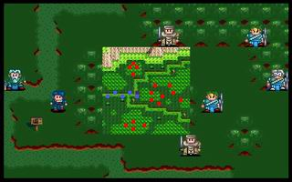

第三章 黑暗森林

 雷特
雷特 米兰
米兰 克隆
克隆 艾利欧
艾利欧 巴拉多
巴拉多
本关敌人：
 LV5 铁尼 （HP300,AP155,DP45,HIT115,EV25,MV4）
LV5 铁尼 （HP300,AP155,DP45,HIT115,EV25,MV4）
 LV3 小队长x2 （HP180,AP87,DP36,HIT94,EV9,MV4）
LV3 小队长x2 （HP180,AP87,DP36,HIT94,EV9,MV4）
 LV2 士兵x8 （HP100,AP44,DP14,HIT102,EV2,MV4）
LV2 士兵x8 （HP100,AP44,DP14,HIT102,EV2,MV4）
 LV2 弓箭手x5 （HP100,AP64,DP10,HIT86,EV6,MV4）
LV2 弓箭手x5 （HP100,AP64,DP10,HIT86,EV6,MV4）
胜利条件：敌人全灭
失败条件：雷特死亡
战后加入：
 LV3 弓兵 洛加 （HP100,AP82,DP13,HIT107,EV18,MV4,短弓,皮甲）
LV3 弓兵 洛加 （HP100,AP82,DP13,HIT107,EV18,MV4,短弓,皮甲）
战后报酬：
$800G/$2400G
攻略简要：
先干掉上面的敌人，注意优先干掉弓箭手，最后4个人把铁尼围起来打，他打不到你。这一关由于一开始就被包围，所以不要在原地等敌人过来，以免被夹击，观察一下会发现，上面的敌军距离很近，所以一开始全军先往上冲，最好3回合内消灭敌军，这时下面的军队也已经冲上来了，消灭上面后再与下面的正面交锋，弓箭手交给巴拉多处理，之前有换骑枪的话，一次一只，而且很好练，打完之后就剩下铁尼，两只弓箭手，两只士兵，士兵没啥好怕的，麻烦的是铁尼和两只弓箭手站一起，先解决士兵，冲上去时最好能同时解决两只弓箭手，只留铁尼，下一回合后，派4个人堵住铁尼，其它人退开铁尼的射程范围，因为它是弓箭手，不能打旁边的人，所以他就任你宰割了。
练功狂的玩家注意，铁尼经验值相当多，又有带药草，所以也能在这里练到不少等级，虽然炎一很容易满级，不过练高一点对后面的关卡较有益处，当然不练也打的赢，所以看玩家有没有耐心了。
战后商店道具:
武器： |
防具： |
道具： |
剧情对话：
克隆:穿过了这片树林，就可以看到通往潘达拉山的小�\了。
米兰:雷特大哥，这片森林看起来有点阴森可怕...
雷特:别怕别怕呦，有我在这里，不会有什么事的。
艾利欧:(嘻，这个米兰又在趁机撒娇了...)
巴拉多:咦!...你们有没有听到什么声音?
克隆:我也听到了，声音从四面八方传来!看来我们已经被包围了!
雷特:大家小心!准备应战!
干掉了两个小队长和弓兵铁尼，战斗结束。铁尼很是厉害，一下可以发五只箭。
雷特:前面有一栋小木屋!小心有敌人埋伏!
克隆:嗯...这小木屋好象有点眼熟...
艾利欧:你们现在这里等一下我到里面去查查看。
米兰:艾利欧大哥!可得小心呦!
洛加:你们这些天杀的混账!你们把安妮带到哪里去了?
艾利欧:咦!你...你不是洛加叔吗?怎么会在这个地方?
洛加:...你不是和他们一伙的?你是谁?
克隆:艾利欧!怎么了?
洛加:啊!你不是克隆兄吗?
克隆:是洛加兄弟!你怎么会变成这样?艾利欧!快替他松绑!
艾利欧:是的，师父!
克隆:洛加兄弟，这究竟是怎么回事?
洛加:昨晚，我和安妮正在熟睡时，突然冲进来一队士兵，二话不说地就把我们绑了起来。后来听他们的谈话才知道他们想在此设下陷阱，预备截杀目标。
克隆:他们所指的目标，应该就是我们了.咦!安妮呢?
洛加:后来被那些士兵带走了，听说好象是要带到他们的队长那里，名字好象叫什么...希瓦那的。啊!我实在不敢想象，那些家伙会对安妮如何?天哪...
巴拉多:希瓦那!...希瓦那也来了?
克隆:...你认识他吗?
巴拉多:岂止认识!以前在骑士团时，我们是最好的朋友。这位大叔，你放心，要真的是希瓦那的话，他绝对不会乱来的。
洛加:...克隆兄，这几位是...
克隆:自从你和安妮结婚隐居之后，至今已经有十几年没见了，也难怪你认不出来。这位是雷特王子，你还记得吧?
雷特:啊!你是洛加叔，我还记得小时候你常到村里。
洛加:真惶恐，殿下竟然还记得...那么后面那两位不就是米兰及艾利欧了?
米兰:洛加叔叔!真高兴你还记得我!
洛加:艾利欧，真抱歉刚刚错骂了你..那另一位是...
克隆:哦!这位是巴拉多，原本是骑士团的一员，现在已经成为我们的伙伴了。
洛加:...对了!这些士兵既然要截杀你们，难道是殿下的身份被发现了?
克隆:这都怪我太大意了，不知是在什么时候被哈奇知道的...现在我们正打算跟随殿下，讨伐叛徒哈奇...
雷特:克隆伯父，我想先去救安妮阿姨，让洛加叔他们能再度团聚不知你意下如何?
克隆:既然殿下愿意如此，老臣真的是非常感谢!
洛加:殿下的大恩大德，真的是感激不尽!是否可让我同行，一同去援救安妮?
雷特:洛加叔千万别客气!事不宜迟，我们动身吧。
第三章完